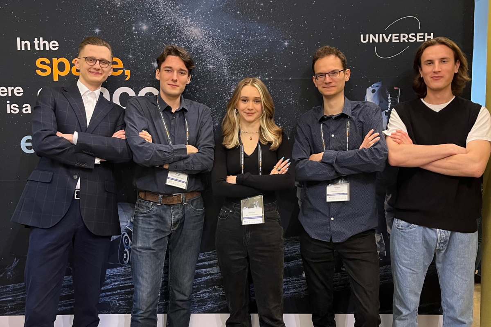
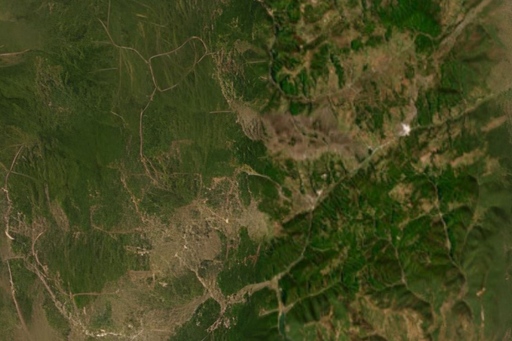
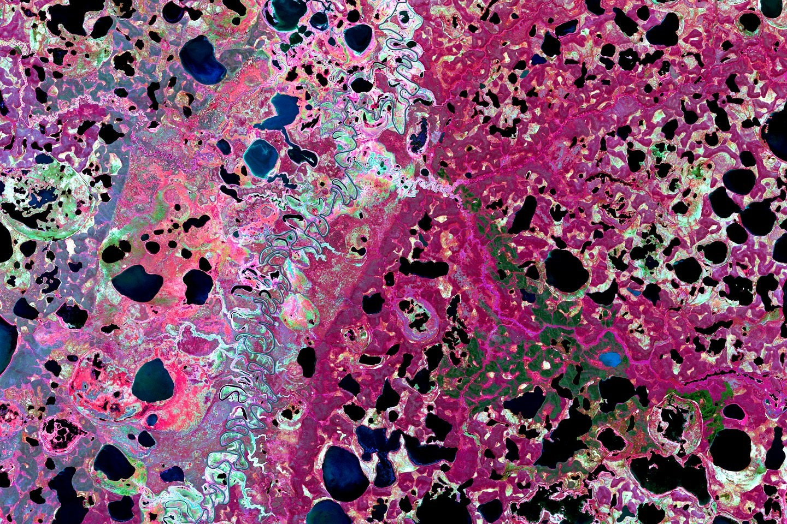
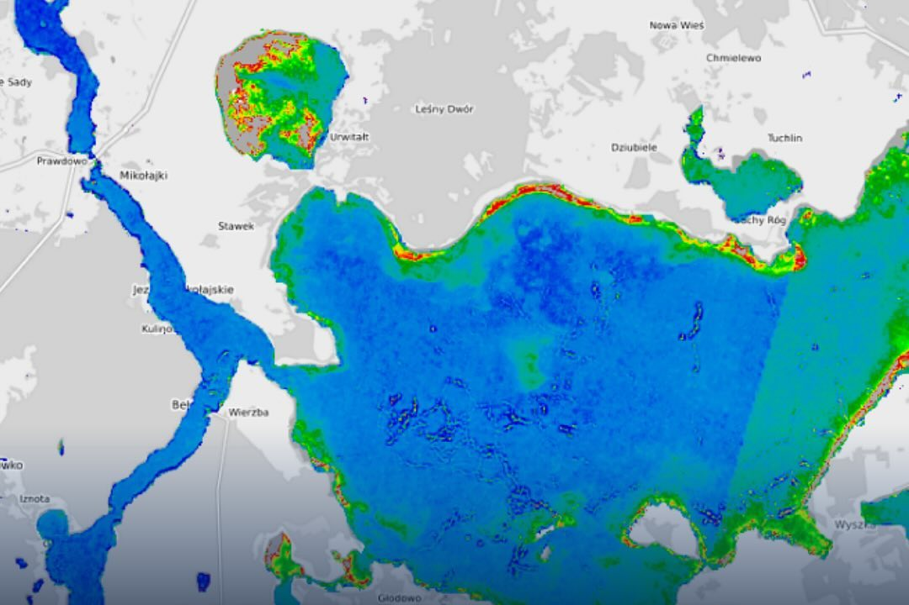

We chart the stars and map the unknown. Join us in discovering what lies beyond the horizon.

We are STARS, a research club specializing in Spatial Technology And Remote Sensing.
Was founded to foster a passion for exploring the possibilities offered by satellite data. The group's activities focus on the acquisition, processing, and analysis of satellite images—activities broadly referred to as downstream applications. Members of the group believe that remote sensing and Earth observation can, through an interdisciplinary approach, help answer many important questions.

19.08.2025
Standard satellite images from Sentinel-2 gain an entirely new quality

19.01.2025
The ongoing climate change contradicts the “permanent” part of permafrost is no longer valid

21.11.2024
Innovative geoportal that enables real-time monitoring of water quality